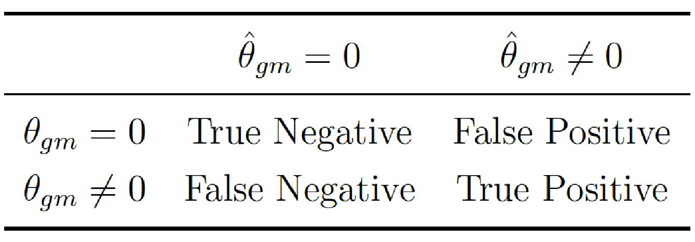

5.4 Numerical simulations
We provide here numerical simulations to assess the ability of SICOMORE to recover relevant interactions against three other methods. We also show that our method is computationally competitive compared to the others.
5.4.1 Data generation
Generation of metagenomic and genomic data matrices
Genomic data
In order to get a matrix \(\mathbf{x}^{\mathit{G}}\) close to real genomic data, we used the software software (Su, Marchini, and Donnelly 2011). This software allows to simulate an entire chromosome conditionally on a reference set of population haplotypes (from HapMap3) and an estimate of the fine-scale recombination rate across the region, so that the simulated data share similar patterns with the reference data. We generate the chromosome 1 using the haplotype structure of CEU population (Utah residents with Northern and Western European ancestry from the CEPH collection) as reference set and we selected \(D_\mathit{G}=200\) variables from this matrix to obtain our simulated dataset. An example of the linkage disequilibrium structure among the simulated SNP is illustrated in Figure 5.2(a).
Metagenomic data
The data matrix \(\mathbf{x}^{\mathit{M}}\), with \(D_\mathit{M}=100\) variables, has been generated using a multivariate Poisson-log normal distribution (Aitchison and Ho 1989) with block structure dependencies.
The Poisson-log normal model is a latent gaussian model where latent vectors \(\mathcal{L}_i \in \mathbb{R}^{D_\mathit{M}}\) are drawn from a multivariate normal distribution \[\mathcal{L}_i \thicksim \mathcal{N}_{D_\mathit{M}}(0, \boldsymbol{\Sigma}),\] where \(\boldsymbol{\Sigma}\) is a covariance matrix that allows to obtain a correlation structure among the variables.
The centered phenotypic count data \(\mathrm{Y}_i\) are then drawn from a Poisson distribution conditionally on \(\mathcal{L}_i\) \[\mathrm{Y}_{ij}|\mathcal{L}_{ij} \thicksim \mathcal{P}\left( e^{\mu_j + \mathcal{L}_{ij}}\right),\] with \(\mu_j = 0\).
The block structure, pictured in Figure 5.2(b), has been obtained by drawing a latent multivariate normal vector using a covariance matrix \(\boldsymbol{\Sigma}\) such that the correlation level between the latent variables of a group are between 0.5 and 0.95. By simulating this way, we obtain a matrix of count data with a covariance structure close to what is observed with metagenomic data. As stated in Section 5.3.1, we calculated the proportions in each random variable and transformed them using centered log-ratios.
Figure 5.2: Examples of hierarchical structures}: correlations observed on (a) genomic data \(\mathbf{x}^\mathit{G}\) and (b) metagenomic data \(\mathbf{x}^\mathit{M}\).
5.4.2 Generation of the phenotype
For all simulations, we used a fixed value of \(N_{\mathit{M}} = 6\) groups for the matrix \(\mathbf{x}^{\mathit{M}}\) and for the case of the matrix \(\mathbf{x}^{\mathit{G}}\), since we cannot exactly control the block structure with , we used the Gap Statistic (see Section 2.5.1) to identify a number of groups in the hierarchy. For instance, in Figure 5.2(a), the Gap Statistic identified \(N_{\mathit{G}} = 16\) groups. The supervariables were then calculated using averaged groups of variables to obtain the two matrices of supervariables, \(\tilde{\mathbf{x}}^{\mathit{G}}\) and \(\tilde{\mathbf{x}}^{\mathit{M}}\).
To generate the phenotype, we considered a data structure for which the data to regress has been generated using supervariables according a linear model with interactions of the form:
\[\label{eq:phenotype_gen} y_i = \sum_{g \in \mathcal{S}^{\mathit{G}}}\tilde{x}_i^g \beta_{g} + \sum_{m \in \mathcal{S}^{\mathit{M}}} \tilde{x}_i^m \beta_{m} + \sum_{g \in \mathcal{S}^{\mathit{G}}}\sum_{m \in \mathcal{S}^{\mathit{M}}} \underbrace{\left(\tilde{x}_i^g \cdot \tilde{x}_i^m\right)}_{\boldsymbol{\phi}^{gm}_i} {\theta_{gm}} + \, \epsilon_i \,,\]
where \(\mathcal{S}^{\mathit{G}}\) and \(\mathcal{S}^{\mathit{M}}\) are subsets of randomly chosen effects from the matrices \(\tilde{\mathbf{x}}^{\mathit{G}}\) and \(\tilde{\mathbf{x}}^{\mathit{M}}\) respectively, \(\tilde{x}_i^g\) is the \(i^{th}\) sample of the \(g\) effect and \(\beta_{g}\) its corresponding coefficient, \(\tilde{x}_i^m\) is the \(i^{th}\) sample of the \(m\) effect and \(\beta_{m}\) its corresponding coefficient. Finally, \(\theta_{gm}\) is the interaction between variables \(\tilde{x}_i^g\) and \(\tilde{x}_i^m\).
We considered \(I \in \{1,3,5,7,10\}\) true interactions between the supervariables to generate the phenotype so that \(I\) blocks of the coefficients of \(\theta_{gm}\) have non-zero values. The process was repeated 30 times for each couple of parameters in \(N=\{50, 100, 200\} \times mean(\boldsymbol{\epsilon})=\{0.5, 1, 2\}\).
5.4.3 Comparison of methods
To evaluate the performance of our method, SICOMORE, to retrieve the true causal interaction, we compared it with three other methods, namely HCAR (Park, Hastie, and Tibshirani 2007), MLGL (Grimonprez 2016) and glinternet (Lim and Hastie 2015). It is worth mentioning that, as we already stated, SICOMORE is an approach that borrow from HCAR and MLGL and that is designed to detect interactions. We had then to adapt these approaches to our problematic, as we will describe it in the following sections, they are therefore not evaluated in the context they were meant to be used. Thus, the purpose of this evaluation is to know if SICOMORE is capable of improving the individual performance of these methods by combining them to detect statistical interactions.
Hierarchical Clustering and Averaging Regression (HCAR)
This methodology can be simply adapted to our problematic by performing two hierarchical clustering on each data matrix \(\mathbf{x}^{\mathit{G}}\) and \(\mathbf{x}^{\mathit{M}}\) and then compute the unweighted compressed representations of those hierarchies as explained in Section 5.3 and illustrated in Figure 5.1(c). We can then fit a Lasso regression model on both compressed representations with interactions between all possible groups. We consider that HCAR is able to retrieve a true causal interaction if the Lasso procedure selects the interaction term at the correct levels of the two hierarchies.
Multi-Layer Group-Lasso (MLGL)
The model is fitted with weights on the groups defined by the expanded representation of the two hierarchies as illustrated in Figure 5.1(b). This method does not work on the compressed supervariables but on the initial variables. Our evaluation considers that the method is able to retrieve real interactions if it selects the correct interaction terms between two groups of variables at the right level in both hierarchies.
5.4.3.1 Group-Lasso interaction network (glinternet)
glinternet (Lim and Hastie 2015) is a procedure that considers pairwise interactions in a linear model in a manner that satisfies strong dependencies between main and interaction effects: whenever an interaction is estimated to be non-zero, both its associated main effects are also included in the model. This method uses a Group-Lasso model to accommodate with categorical variables and apply constraints on the main effects and interactions to result in interpretable interaction models.
The glinternet model fits a hierarchical group-lasso model with constraints on the main and interactions effects as specified in the equation whilst accommodating for the strong dependence hypothesis by adding an appropriate penalty to the loss function (we refer the reader to (Lim and Hastie 2015) for more details on the form of the penalty). For very large problems (with a number of variables \(\geq 1.10^5\)), the group-lasso procedure is preceded by a screening step that gives a candidate set of main effects and interactions. They use an adaptive procedure that is based on the strong rules (Tibshirani et al. 2012) for discarding predictors in lasso-type problems.
Since this method can only work at the level of variables, it was necessary to include a group structure into the analysis. Therefore, we decided to fit the glinternet model on the compressed variables and to constraint the model to only fit the interaction terms between the supervariables of the two matrices \(\tilde{\mathbf{x}}^{\mathit{G}}\) and \(\tilde{\mathbf{x}}^{\mathit{M}}\). We explicitly removed all interaction terms between supervariables belonging to the same data matrix.
For a fair comparison with the other methods, we considered two options namely GLtree and GLgap. On one hand, option GLtree works on the unweighted compressed representations of the two hierarchies (Figure 5.1(c)) thus considering all the possible interactions between the supervariables of the two datasets. On the other hand, option GLgap considers only the interactions between the compressed variables constructed at a specific level in the hierarchies, chosen by the Gap Statistic.
Given that \(D^{\mathit{G}}\) and \(D^{\mathit{M}}\) are the number of variables in \(\mathbf{x}^{\mathit{G}}\) and \(\mathbf{x}^{\mathit{M}}\), the dimension of the compressed matrices \(\tilde{\mathbf{x}}^{\mathit{G}}\) and \(\tilde{\mathbf{x}}^{\mathit{M}}\) are respectively \(\tilde{D}^{\mathit{G}} = D^{\mathit{G}} + (D^{\mathit{G}}-1)\) and \(\tilde{D}^{\mathit{M}} = D^{\mathit{M}} + (D^{\mathit{M}}-1)\). Thus, for GLtree the number of interactions to investigate are \(\tilde{D}^{\mathit{G}} \times \tilde{D}^{\mathit{M}}\) while for GLgap this number will depend on the level chosen by the Gap statistic but will be either way smaller since we consider only a specific level of the hierarchy in this option. In the numerical simulations, given that \(D^{\mathit{G}} = 200\) and \(D^{\mathit{M}}=100\), the use of strong rules to discard variables is therefore not necessary as (Lim and Hastie 2015) argued that glinternet can handle very large problems without any screening (360M candidate interactions were fitted when evaluating the method on real data examples).
5.4.4 Evaluation metrics
For each run, we evaluated the quality of the variable selection using Precision and Recall. More precisely, we compared the true interaction matrix \(\boldsymbol{\theta}\) that we used to generate the phenotype with the estimated interaction matrix \(\hat{\boldsymbol{\theta}}\) compute for each model. For all possible interactions \(\{gm\}\), we then determined the following confusion matrix:

and hence compute \(\text{Precision}={\frac{TP}{(FP+TP)}}\) and \(\text{Recall}=\frac{TP}{FN+TP}\). In this context, a true positive corresponds to a significant \(p\)-value on a true causal interaction, a false positive to a significant \(p\)-value on a noise interaction, and a false negative to a non-significant \(p\)-value on a true causal interaction. An example of the interaction matrix \(\boldsymbol{\theta}\) is given in Figure 5.3 for \(I=5\) blocks in interaction.
Figure 5.3: Illustration of the true interaction matrix \(\boldsymbol{\theta}\) with \(I = 5\), \(\sigma = 0.5\) and \(n=100\). Each non-zero value in this matrix is considered as a true interaction between two variables.
For all methods, we correct for multiple testing by controlling the Family Wise Error Rate using the method of Holm-Bonferroni. Even though it is known to be stringent, we chose to rely on Holm-Bonferroni method to adjust for multiple testing because the number hypothesis tests performed in our simulation context is not that high. In a high-dimensional context such as with the analysis of real DNA chip data, we would rather use the Benjamini-Hochberg method for the control of the false discovery rate.
5.4.5 Performance results
The performances of each method to retrieve the true causal interactions are illustrated in Figure 5.5 for precision and Figure 5.6 for recall. For the sake of clarity we only show the results for \(I=7\) blocks of variables in interaction.
The results in terms of recall reveal good abilities of MLGL and SICOMORE to retrieve True Positive interactions, with an overall advantage for our method. HCAR achieves a lower performance due to the fact that it favours the selection of small groups which are only partly contained in the groups that generate the interactions showing that the weighting scheme of MLGL and SICOMORE is efficient. GLgap is not able to retrieve relevant interactions but the way to define the structure among variables, using the Gap Statistic, is also quite different than for the three other methods.
In terms of precision, all methods perform poorly with a significant number of false positive interactions. MLGL and SICOMORE tend to select groups of variables and supervariables too high in the tree structure, inducing false positives which are spatially closed to the true interactions. HCAR, which favours small groups as explained above, is less subject to that. The behaviour of GLgap may vary according to the selected cut with the Gap statistic into the tree structure while option GLtree exhibit slightly better precision. Still, the method glinternet is globally not able to retrieve correctly the true interactions whether or not it uses the compressed or original representation. The plots in Figure 5.4 represent the recovered confusion matrices of interaction \(\theta_{gm}\) for each compared algorithm for one particular set of simulation parameters (\(I = 5\), \(\sigma = 0.5\), \(n=100\)).
Figure 5.4: Confusion matrices of interactions \(\theta_{gm}\) for each compared algorithm with the following simulation parameters: \(I = 5\), \(\sigma = 0.5\), \(n=100\). We can see in this example that MLGL and SICOMORE behaves similarly with very large genomic regions identified while HCAR tends to work with smaller genomic and metagenomic regions.

Figure 5.5: Boxplots of precision for each couple of parameters \(N\) (number of examples in rows) and \(\epsilon\) (difficulty of the problem in columns) for \(I=7\).
Figure 5.6: Boxplots of recall for each couple of parameters \(N\) (in rows) and \(\epsilon\) (in columns) for \(I=7\).
5.4.6 Computational time
In order to decrease the calculation time in our algorithm, we chose to restrain the search space in the tree to a certain amount, depending on the number of initial features. We can choose to limit the search in the area of the tree where the jumps in the hierarchy are the highest and arbitrarily set the number of groups to evaluate at five times the number of initial features. By doing so, we are reducing the number of variables to be fitted in the Lasso regression without affecting the performance in terms of Recall or Precision.
We compared the computational performance of our method with the three others by varying \(D^{\mathit{G}}\) (we fixed \(D^{\mathit{M}} = 100\) and \(n = 200\)). We repeated the number of evaluation five times for each \(D^{\mathit{G}}\) and averaged the calculation time.
We can conclude from the results presented in table 5.2 that two methods, MLGL and glinternet, are not suitable for large-scale analysis of genomic data since the calculation time increase drastically as soon as the dimension of the problem exceed a few thousand variables. HCAR and SICOMORE behave similarly. That being said, remember that HCAR is tuned with an unweighted compressed representation avoiding having to choose the optimal cut in the tree, as in SICOMORE. With its original strategy based on a \(K\) cross validation, there is no doubt that the gap between HCAR and SICOMORE would have been much larger. Indeed, the computational cost of an additional exploration to find the optimal cut in HCAR grows with the number of variables and therefore with \(h_T\), the height of the tree. HCAR has to evaluate \(h_T \times K\) compressed models while SICOMORE only has to compress \(h_T-1\) groups to evaluate the final model.
References
Aitchison, John, and C. H. Ho. 1989. “The Multivariate Poisson-Log Normal Distribution.” Biometrika 76 (4): 643–53.
Grimonprez, Quentin. 2016. “Selection de Groupes de Variables corrélées En Grande Dimension.” PhD thesis, Université de Lille; Lille 1.
Lim, Michael, and Trevor Hastie. 2015. “Learning Interactions via Hierarchical Group-Lasso Regularization.” Journal of Computational and Graphical Statistics 24 (3): 627–54.
Park, Mee Young, Trevor Hastie, and Robert Tibshirani. 2007. “Averaged Gene Expressions for Regression.” Biostatistics 8 (2): 212–27.
Su, Z., J. Marchini, and P. Donnelly. 2011. “HAPGEN2: Simulation of Multiple Disease Snps.” Bioinformatics 27 (16): 2304.
Tibshirani, Robert, Jacob Bien, Jerome Friedman, Trevor Hastie, Noah Simon, Jonathan Taylor, and Ryan J Tibshirani. 2012. “Strong Rules for Discarding Predictors in Lasso-Type Problems.” Journal of the Royal Statistical Society: Series B (Statistical Methodology) 74 (2): 245–66.